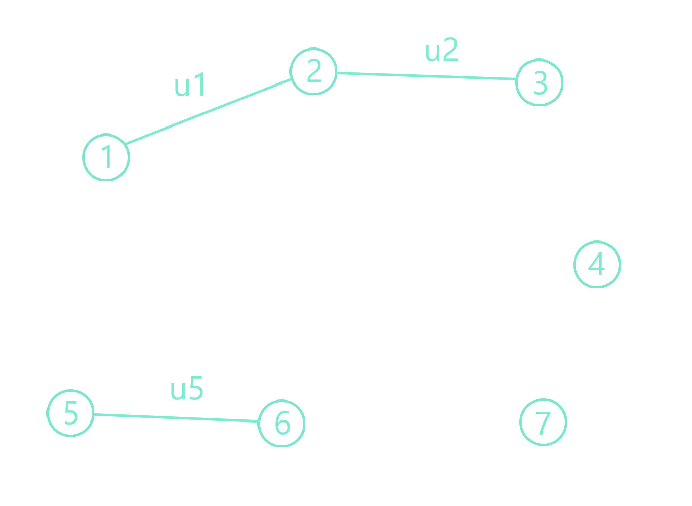
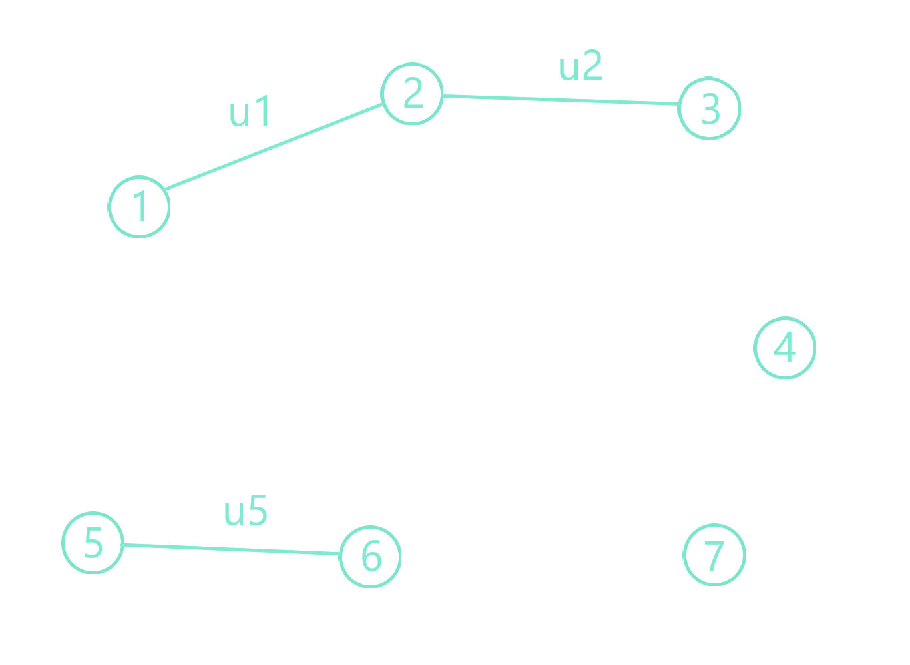
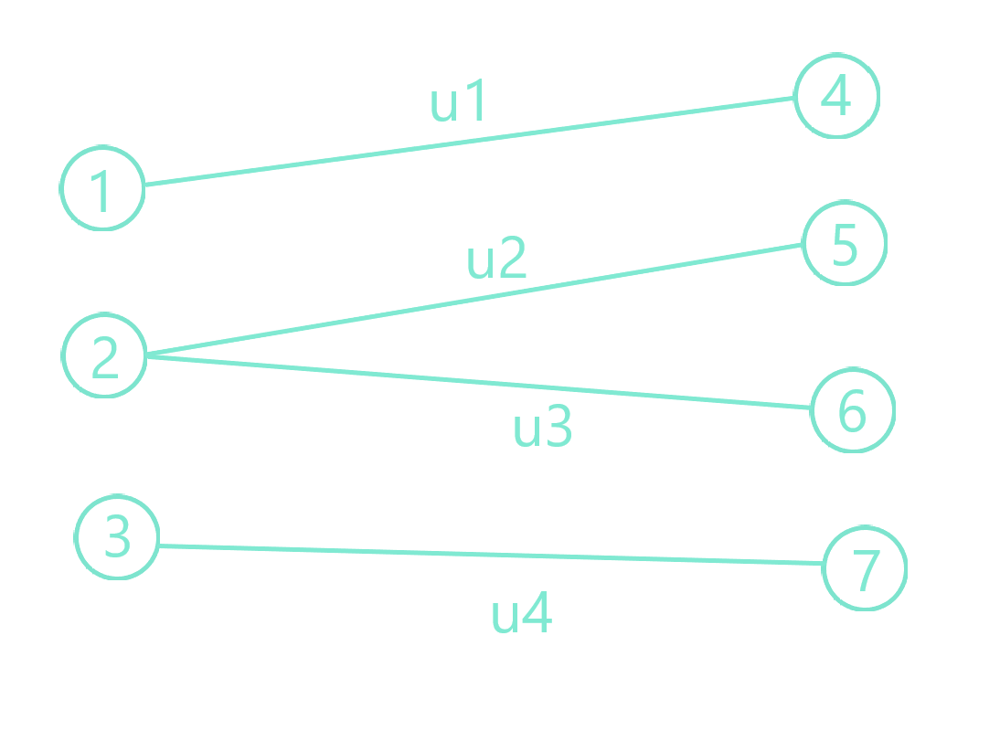

Definiţie : Se numeşte graf neorientat o pereche ordonată de mulţimi (X,U) , unde:
• X este o mulţime finită şi nevidă de elemente numite vârfuri sau noduri;
• U este o mulţime de perechi neordonate de câte două elemente din X, numite muchii sau arce;
Un graf neorientat poate fi reprezentat sub forma unei figuri geometrice alcătuită din puncte (vârfuri,noduri) şi linii drepte sau curbe care unesc aceste puncte (muchii, arce). Respectând o anumită tradiţie pe care o regăsim în literatura de specialitate, vom folosi:
• pentru grafuri neorientate termenii de vârf şi muchie;
• pentru grafurile orientate termenii de nod şi arc;
Dacă o muchie trece prin nodurile x şi y, atunci ea se notează [x,y] sau (x,y).
Pe caz general, într-un graf neorientat G=(X,U), notăm: • m - numărul muchiilor; • n - numărul vârfurilor; • X={x1,x2,…….,xn} - mulţimea vârfurilor; • U={u1,u2,……um} - mulţimea muchiilor; • muchia uk este o pereche neordonată (a,b) alcătuită din două elemente din X; Pentru o muchie uk=(a,b), vom spune că: • vârfurile a şi b sunt adiacente şi se numesc extremităţile muchiei uk; • muchia uk şi vârful a, respectiv vârful b , sunt incidente în graf; • muchia (a,b) este totuna cu muchia (b,a) (nu există o orientare a muchiei);
Exemplu: Pentru graful G=(X,U) din figura alăturată avem:
• X={1,2,3,4,5,6,7} - mulţimea vârfurilor;
• U={u1,u2,u3,u

Definiţie: Gradul unui vârf x, notat d(x), reprezintă numărul muchiilor care trec prin nodul x (incidente cu nodul x).
Exemplu: În graful din figura de mai sus avem : d(1)=d(5)=d(6)=1, d(2)=3, d(3)=d(4)=2, d(7)=0. • Un vârf care are gradul 0, se numeşte vârf izolat (de exemplu, vârful 7); • Un vârf care are gradul 1, se numeşte vârf terminal (de exemplu, vârfurile 5 şi 6);
Teoremă: Într-un graf G=(X,U) cu n vârfuri şi m muchii, suma gradelor tuturor vârfurilor este egală cu 2*numărul muchiilor: d(1)+d(2)+...+d(n)=2*m.
Consecinţă: În orice graf neorientat G=(X,U) există un număr par de vârfuri cu grad impar.
Demonstraţia este evidentă. Fiecare muchie de forma [xi,xj] contribuie cu o unitate la gradul vârfului i şi cu o unitate la gradul vârfului j. Aşadar fiecare muchie adaugă două unităţi la suma gradelor. Fiind m muchii, rezultă că suma gradelor este 2*m.
Teoremă: Daca graful neorientat G are n noduri atunci numarul total de grafuri neorientate care se pot forma cu aceste noduri este 2C2n.
Teoremă: Un graf complet este un graf neorientat simplu în care fiecare pereche de noduri distincte este conectată printr-o muchie. Graful complet cu n noduri este notat cu Kn. Kn are n(n − 1)/2 muchii.
Considerăm un graf neorientat G=(X,U) cu m muchii şi n vârfuri numerotate 1,2,3,.....,n. Cele mai cunoscute forme de reprezentare ale unui astfel de graf sunt: matricea de adiacenţă, listele vecinilor, vectorul muchiilor, matricea de incidenţă şi matricea costurilor.
Este o matrice A pătratică cu n linii şi n coloane, în care elementele a[i][j] se definesc astfel:
a[i][j]=1, dacă există muchia [i,j] cu i ≠ j; 0, în caz contrarPentru graful G=(X,U) din figura alăturată, matricea de adiacenţă este:
| 1 | 2 | 3 | 4 | |
| 1 | 0 | 1 | 0 | 0 |
| 2 | 1 | 0 | 1 | 1 |
| 3 | 0 | 1 | 0 | 1 |
| 4 | 0 | 1 | 1 | 0 |

Elementul a[2][3] (de pe linia 2 şi coloana 3) va fi 1, întrucât există în graf muchia (2,3). Dar acestă muchie este identică cu muchia (3,2), deci şi a[3][2] este 1. Pe caz general, a[i][j]=a[j][i] oricare ar fi i,j ∈ {1,2,...,n} , cu i ≠ j, adică, pentru orice graf neorientat, matricea de adiacenţă a este simetrică faţă de diagonala principală.
Dacă A este matricea de adiacență a unui graf orientat sau neorientat G, atunci matricea An (adică produsul matriceal a n copii ale lui A) are o interpretare interesantă: elementul (i, j) dă numărul de drumuri (orientate sau neorientate) de lungime n din nodul i la nodul j. Dacă n este cel mai mic număr întreg nenegativ, astfel încât pentru orice pereche i, j, elementul (i, j) din An este pozitiv, atunci n este distanța între nodul i și nodul j. Acest lucru implică, de exemplu, că numărul de triunghiuri într-un graf neorientat G este exact urma lui A3 împărțită la 6. Matricea de adiacență poate fi folosită și pentru a determina dacă graful este sau nu este conex ( pentru oricare două vârfuri x şi y diferite ale sale, există un lanţ care le leagă).
Pentru fiecare nod i ∈{1,2,……,n} formăm lista vecinilor lui i. Aceasta cuprinde toate nodurile care sunt extremităţi ale muchiilor ce trec prin nodul i. Pentru graful G=(X,U) din figura de mai sus, lista vecinilor este următoarea:
| Nodul | Lista vecinilor | ||
| 1 | 2 | - | - |
| 2 | 1 | 3 | 4 |
| 3 | 2 | 4 | - |
| 4 | 2 | 3 | - |
Observăm că fiecare linie i din listele vecinilor conţine indicii coloanelor pe care se găsesc valori de 1 în linia i a matricei de adiacenţă. Acestă metodă de reprezentare se implementează elegant utilizând alocarea dinamică a memoriei prin intermediul listelor înlănţuite.
Fiecare muchie a grafului poate fi privită ca o înregistrare cu două componente: cele două vârfuri care constituie extremităţile muchiei. Notând aceste extremităţi cu nod1 şi nod2, putem defini tipul de date TMUCHIE astfel:
struct TMUCHIE { int nod1, nod2; };
Graful în ansamblul său, este o mulţime de muchii, adică o mulţime de elemente de tipul TMUCHIE. În consecinţă, definim graful ca un “vector de muchii”, adică un vector cu elemente de tipul TMUCHIE: struct TMUCHIE v[25];
Numărul real de elemente este numărul de muchii m. Astfel, elementele efectiv folosite ale vectorului vor fi v[1], v[2],….,v[m]. Fiecare element v[i] este de tipul TMUCHIE şi reprezintă o muchie a grafului, având două componente: v[i].nod1 şi v[i].nod2 care sunt vârfurile extremităţi ale muchiei.
Pentru graful G=(X,U) cu n vârfuri şi m muchii, matricea de incidenţă a are n linii şi m coloane şi se defineşte astfel:
a[i][j]=1, dacă vârful xi este incident cu muchia mj
0, în caz contrar
Exemplu: Fie graful G=(X,U) din figura alăturată cu: X={1,2,3,4,5,6} U={[1,2], [1,3], [1,4], [1,5], [2,4], [3,5], [3,6], [4,5], [5,6]} Pentru acest graf, asociind fiecăruia dintre vârfuri câte o linie a matricei şi fiecărei muchii câte o coloană, se obţine matricea de incidenţă:
| u1 | u2 | u3 | u4 | u5 | u6 | u7 | u8 | u9 | |
| x1 | 1 | 1 | 1 | 1 | 0 | 0 | 0 | 0 | 0 |
| x2 | 0 | 0 | 0 | 1 | 1 | 0 | 0 | 0 | 0 |
| x3 | 1 | 0 | 0 | 0 | 0 | 1 | 1 | 0 | 0 |
| x4 | 0 | 0 | 1 | 0 | 1 | 0 | 0 | 0 | 1 |
| x5 | 0 | 1 | 0 | 0 | 0 | 0 | 1 | 1 | 1 |
| x6 | 0 | 0 | 0 | 0 | 0 | 1 | 0 | 1 | 0 |
Datorită specificului unor probleme practice, acest mod de memorare a grafului poate căpăta două aspecte, după cum trebuie determinat minimul sau maximul unei anumite mărimi asociate muchiilor (cost, durată, timp, distanţă etc.).
A) Matricea costurilor, forma 1: este folosită în cazul în care se doreşte determinarea unui drum de lungime minimă între două vârfuri oarecare şi se defineşte astfel:
a[i][j]= c, dacă există o muchie de cost c>0 între nodurile i şi j, i≠j 0, dacă i=j ∞, dacă nu există muchie între vârfurile i şi j, i≠j
Este evidentă necesitatea ataşării unei valori cât mai mari unei muchii ce de fapt nu există, deoarece, căutându-se un drum de lungime minimă, în acest mod se evită selectarea, la un moment dat, a respectivei muchii. În practică, în scrierea unui program se alege cea mai mare valoare ce se poate reprezenta în calculator.
B) Matricea costurilor, forma 2: este folosită în cazul când se doreşte determinarea unui drum de lungime maximă între două noduri şi se defineşte astfel:
a[i][j]= c, dacă există o muchie de cost c>0 între nodurile i şi j, i≠j 0, dacă i=j -∞, dacă nu există muchie între vârfurile i şi j, i≠j
De data aceasta, din considerente similare, se alege cea mai mică valoare ce se poate reprezenta în calculator.
Definiţie: Fie graful G=(X,U). Un graf parţial al lui G, este un graf G1=(X,V), cu V⊆U. Astfel spus, un graf parţial G1 al lui G, este chiar G, sau se obţine din G păstrând toate vârfurile şi suprimând nişte muchii.
Exemplu: Pentru graful G=(X,U) de mai jos, construim alăturat graful parţial obţinut prin eliminarea muchiilor ce trec prin vârful 4. Graful parţial obţinut este G1=(X,V), unde X={1,2,3,4,5,6,7}, iar V={u1,u2,u5}. S-au eliminat muchiile u3 şi u4 care trec prin nodul 4.
 

Definiţie: Fie graful G=(X,U). Un subgraf al lui G, este un graf G1=(Y,T), unde Y⊂X şi T⊂U, iar T va conţine numai muchiile care au ambele extremităţi în Y. Astfel spus, un subgraf G1 al lui G, se obţine din G eliminând nişte vârfuri şi toate muchiile incidente cu aceste vârfuri eliminate.
Exemplu: Pentru graful G=(X,U) de mai sus, construim subgraful obţinut prin eliminarea vârfurilor 1 şi 6 , respectiv prin eliminarea muchiilor u1 şi u5 incidente cu aceste vârfuri.
Teoremă: Numărul de grafuri parţiale ale unui graf cu m muchii este egal cu 2m.
Teoremă: Numărul de subgrafuri ale unui graf cu n noduri este egal cu 2n -1.
Definiţie: Un graf complet este un graf neorientat simplu în care fiecare pereche de noduri distincte este conectată printr-o muchie. Graful complet cu n noduri este notat cu Kn.
Teoremă: Kn are n(n − 1)/2 muchii.
Exemplu: K5
Definiţie: Se numeşte graf bipartit, un graf G=(X,U) cu proprietatea că există două mulţimi A şi B incluse în X, astfel încât:
• A ∩ B = ∅ , A ∪ B =X • toate muchiile grafului au o extremitate în mulţimea A şi cealaltă extremitate în mulţimea B
Exemplu: Fie G=(X,U), unde X={1,2,3,4,5,6,7}, U={u1,u2,u3,u4}. Cu mulţimile A={1,2,3} şi B={4,5,6,7} generăm graful bipartit alăturat. Se observă că A ∩ B = ∅ şi A ∪ B =X, iar fiecare muchie are o extremitate în A şi o extremitate în B.
Definiţie: Se numeşte graf bipartit complet, un graf bipartit cu proprietatea că pentru orice vârf x din mulţimea A şi orice vârf y din mulţimea B, există muchia (x,y) (unde A şi B sunt cele două mulţimi care partiţionează mulţimea vârfurilor X). Dacă mulţimea A are p elemente, iar mulţimea B, q elemente, un graf bipartit complet se mai notează cu Kp,q.
Teoremă: Un graf bipartit complet Kp,q are p*q muchii.
Definiţie: Se numeşte lanţ în graful G=(X,U), o succesiune de vârfuri z1,z2,...,zk, unde z1, z2,...,zk ∈ X, cu proprietatea că oricare două vârfuri consecutive sunt adiacente, adică există muchiile [z1,z2], [z2,z3],...,[zk-1,zk] ∈ U. Vârfurile z1 şi zk se numesc extremităţile lanţului, iar numărul de muchii care intră în componenţa sa reprezintă lungimea lanţului.
Exemplu: În graful din figura alăturată putem distinge lanţurile: L1=(1,2,3,5,4,8) L2=(1,2,3,2) L3=(9,3,5,4,3,2) L4=(6,7,3,5,4,8)
Un lanţ poate fi interpretat ca un traseu care pleacă din vârful z1 şi ajunge în vârful zk, trecând prin mai multe vârfuri şi parcurgând mai multe muchii. De exemplu, lanţul L1=(1,2,3,5,4,8) pleacă din vârful z1=1, şi parcurgând muchiile [1,2], [2,3], [3,5], [5,4], [4,8] (în acestă ordine) ajunge în vârful zk=8. Acest lanţ are lungimea 5, întrucât include cinci muchii.
Observaţie: Dacă vârfurile z1, z2,...,zk sunt distincte două câte două, lanţul se numeşte elementar; în caz contrar, lanţul este ne-elementar.
Exemplu: Lanţul L4 din exemplul anterior este elementar, pentru că nici un vârf nu apare de două ori. La fel, lanţul L1. În schimb, lanţurile L2 şi L3 sunt ne-elementare: în L2 se repetă vârful 2, iar în L3 se repetă vârful 3.
Definiţie: Se numeşte ciclu într-un graf, un lanţ L=(z1, z2,...,zk) cu proprietatea că z1=zk şi muchiile [z1,z2], [z2,z3],...,[zk-1,zk] sunt distincte două câte două.
Exemplu: În graful din figura de mai sus, C1=(3,4,5,3,7,6,1,2,3), C2=(1,2,3,7,6,1), C3=(3,5,4,9,3) sunt cicluri. De exemplu, C3 este ciclu, deoarece traseul pe care îl descrie porneşte din vârful 3 şi ajunge tot în vârful 3, şi în plus muchiile [3,5], [5,4], [4,9] şi [9,3] sunt distincte două câte două (nu apare aceeaşi muchie de mai multe ori).
Observaţie: Dacă într-un ciclu, toate vârfurile cu excepţia primului şi a ultimului sunt distincte două câte două, atunci ciclul se numeşte elementar; în caz contrar, el este ne-elementar.
Exemplu: Ciclurile C2 şi C3 din exemplul anterior sunt elementare, iar C1 este ne-elementar (în C1 vârful 3 apare şi ca vârf intermediar, adică traseul descris mai trece odată prin vârful 3 pe lângă faptul că porneşte din el şi se întoarce tot în el).
Observaţie: Un graf neorientat care nu conţine cicluri se numeşte aciclic.
În graful alăturat, un exemplu de ciclu hamiltonian este: CH=[1,2,3,5,4,6,7,1]
În graful alăturat, un ciclu eulerian este secvenţa: CE=[1,10,2,3,4,5,6,3,7,8,10,9,11,12,10,13,1]
Definiţie: Într-un graf conex G=(X,U) se numeşte ciclu hamiltonian (CH) un ciclu elementar care conţine toate vârfurile grafului.
Definiţie: Se numeşte graf hamiltonian un graf care conţine un ciclu hamiltonian.
Teoremă: Graful complet Kn este hamiltonian.
O condiţie suficientă ca un graf să fie hamiltonian a fost enunţată de matematicianul Dirac în 1952 (există grafuri care sunt hamiltoniene dar nu satisfac teorema lui Dirac).
Teorema lui Dirac: Dacă G=(X,U) este un graf cu n≥3 vârfuri astfel încât gradul fiecărui vârf x∈X satisface condiţia grad(x)≥n/2, atunci G este hamiltonian.
Definiţie: Fie un graf G=(X,U). Se numeşte ciclu eulerian (CE) un ciclu care conţine toate muchiile grafului. Un graf care conţine un ciclu eulerian se numeşte graf eulerian.
Teoremă: Un graf G fără vârfuri izolate este eulerian dacă şi numai dacă este conex şi gradele tuturor vârfurilor sunt numere pare (condiţie necesară şi suficientă).